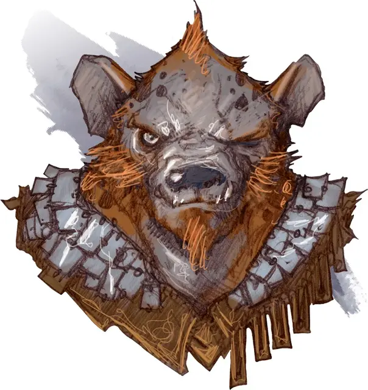

Гнолл клык Йеногу
Gnoll Fang of Yeenoghu
Среднее Исчадие (Гнолл), хаотично-злое

Класс Доспеха 14 (шкурный доспех)
Хиты 65 (10к8 + 20)
Скорость 30 футов
| мод | спас | ||
|---|---|---|---|
| СИЛ | 17 | +3 | +3 |
| ЛОВ | 15 | +2 | +2 |
| ТЕЛ | 15 | +2 | +4 |
| мод | спас | ||
|---|---|---|---|
| ИНТ | 10 | +0 | +0 |
| МДР | 11 | +0 | +2 |
| ХАР | 13 | +1 | +3 |
Чувства тёмное зрение 60 футов, пассивное Восприятие 10
Языки Общий, Бездны
Опасность 4 (1100 опыта)
Бонус мастерства +2
Среда обитания Лес, Луг, Пустыня, Холмы
Особенности
Буйство. Если гнолл в свой ход опускает рукопашной атакой хиты существа до 0, он может бонусным действием переместиться на расстояние до половины своей скорости и совершить атаку укусом.
Действия
Мультиатака. Гнолл совершает три атаки: одну укусом, и две когтями.
Укус. Рукопашная атака оружием: +5 к попаданию, досягаемость 5 футов, одно существо. Попадание: Колющий урон 6 (1к6 + 3), и цель должна преуспеть в спасброске Телосложения Сл 12, иначе получит урон ядом 7 (2к6).
Коготь. Рукопашная атака оружием: +5 к попаданию, досягаемость 5 футов, одна цель. Попадание: Рубящий урон 7 (1к8 + 3).
Описание
Празднование побед у гноллов сопровождается демоническими ритуалами и кровавыми приношениями Йеногу. Иногда демонический повелитель награждает своих последователей, делая одного из них одержимым демоном. Помеченный Йеногу счастливчик становится «клыком Йеногу» — избранным Властелина Гноллов. Гиена, пирующая врагом, которого поразил клык, подвергается ужасным трансформациям, становясь взрослым гноллом. Именно так Йеногу сотворил первых гноллов. Клык Йеногу может значительно увеличить популяцию гноллов в зависимости от количества гиен в округе. Единственный способ это предотвратить — убить клыка.
См. дополнительно статью: "Бестиарий: Гноллы"